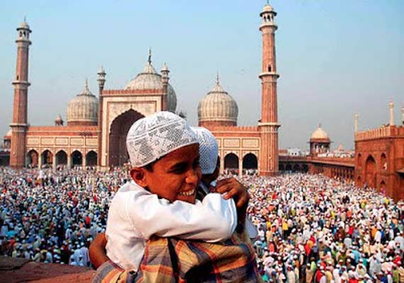

EID
Eid, also known as Eid al-Fitr, is one of the most significant religious festivals in Islam, marking the end of Ramadan, the holy month of fasting and spiritual reflection. This joyous occasion is a time of celebration, prayer, family gatherings, and acts of charity.
Eid begins with the sighting of the new moon, which varies from one country to another, and it lasts for three days. It is a time when Muslims express gratitude to Allah for the strength and self-discipline they displayed during Ramadan and seek forgiveness and blessings for the future.
One of the primary customs of Eid is the special prayer known as "Salat al-Eid," which is performed in an open prayer ground or mosque. Muslims come together in their finest attire to offer this prayer, which is a communal act of worship. The sermon during this prayer often emphasizes unity, compassion, and the importance of charity.

Eid is also a time for family and community. After the prayer, families and friends visit one another, exchange gifts, and share festive meals. Traditional dishes vary from region to region but often include sweet treats like baklava, sheer khurma, and ma'amoul. Giving and receiving gifts, especially for children, is an integral part of the celebration.
Charity, or "Zakat al-Fitr," is a significant aspect of Eid. Muslims are required to provide food or its equivalent value to those in need before the Eid prayer. This act of charity ensures that everyone can partake in the festivities and experience the joy of Eid.
Eid is not just a religious celebration but a time to reinforce the bonds of family, community, and compassion. It is a time for Muslims to come together, share their blessings, and express their gratitude for the spiritual growth achieved during Ramadan. This beautiful festival exemplifies the principles of unity, gratitude, and generosity that are central to the Islamic faith.